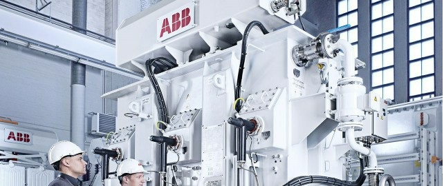

ABB: Smart robotics
Power and robotics firm ABB is one of the most visible to embrace the concept of predictive maintenance, using connected sensors to monitor its robots’ maintenance needs — across five continents — and trigger repair before parts break. Also related to IoT is the company’s collaborative robotics. Its YuMi model, which was designed to collaborate alongside humans, can accept input via Ethernet and industrial protocols like Profibus and DeviceNet.